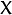
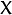

Affine Transformations¶
Goal¶
In this tutorial you will learn how to:
- Use the OpenCV function warpAffine to implement simple remapping routines.
- Use the OpenCV function getRotationMatrix2D to obtain a
 rotation matrix
rotation matrix
Theory¶
What is an Affine Transformation?¶
It is any transformation that can be expressed in the form of a matrix multiplication (linear transformation) followed by a vector addition (translation).
From the above, We can use an Affine Transformation to express:
- Rotations (linear transformation)
- Translations (vector addition)
- Scale operations (linear transformation)
you can see that, in essence, an Affine Transformation represents a relation between two images.
The usual way to represent an Affine Transform is by using a
matrix.Considering that we want to transform a 2D vector by using and , we can do it equivalently with:
or
How do we get an Affine Transformation?¶
Excellent question. We mentioned that an Affine Transformation is basically a relation between two images. The information about this relation can come, roughly, in two ways:
- We know both  and T and we also know that they are related. Then our job is to find

- We know and . To obtain
 we only need to apply . Our information for may be explicit (i.e. have the 2-by-3 matrix) or it can come as a geometric relation between points.
we only need to apply . Our information for may be explicit (i.e. have the 2-by-3 matrix) or it can come as a geometric relation between points.
- We know both  and T and we also know that they are related. Then our job is to find
Let’s explain a little bit better (b). Since
relates 02 images, we can analyze the simplest case in which it relates three points in both images. Look at the figure below:
the points 1, 2 and 3 (forming a triangle in image 1) are mapped into image 2, still forming a triangle, but now they have changed notoriously. If we find the Affine Transformation with these 3 points (you can choose them as you like), then we can apply this found relation to the whole pixels in the image.
Code¶
- What does this program do?
- Loads an image
- Applies an Affine Transform to the image. This Transform is obtained from the relation between three points. We use the function warpAffine for that purpose.
- Applies a Rotation to the image after being transformed. This rotation is with respect to the image center
- Waits until the user exits the program
- The tutorial code’s is shown lines below. You can also download it from here
#include "opencv2/highgui/highgui.hpp"
#include "opencv2/imgproc/imgproc.hpp"
#include <iostream>
#include <stdio.h>
using namespace cv;
using namespace std;
/// Global variables
char* source_window = "Source image";
char* warp_window = "Warp";
char* warp_rotate_window = "Warp + Rotate";
/** @function main */
int main( int argc, char** argv )
{
Point2f srcTri[3];
Point2f dstTri[3];
Mat rot_mat( 2, 3, CV_32FC1 );
Mat warp_mat( 2, 3, CV_32FC1 );
Mat src, warp_dst, warp_rotate_dst;
/// Load the image
src = imread( argv[1], 1 );
/// Set the dst image the same type and size as src
warp_dst = Mat::zeros( src.rows, src.cols, src.type() );
/// Set your 3 points to calculate the Affine Transform
srcTri[0] = Point2f( 0,0 );
srcTri[1] = Point2f( src.cols - 1, 0 );
srcTri[2] = Point2f( 0, src.rows - 1 );
dstTri[0] = Point2f( src.cols*0.0, src.rows*0.33 );
dstTri[1] = Point2f( src.cols*0.85, src.rows*0.25 );
dstTri[2] = Point2f( src.cols*0.15, src.rows*0.7 );
/// Get the Affine Transform
warp_mat = getAffineTransform( srcTri, dstTri );
/// Apply the Affine Transform just found to the src image
warpAffine( src, warp_dst, warp_mat, warp_dst.size() );
/** Rotating the image after Warp */
/// Compute a rotation matrix with respect to the center of the image
Point center = Point( warp_dst.cols/2, warp_dst.rows/2 );
double angle = -50.0;
double scale = 0.6;
/// Get the rotation matrix with the specifications above
rot_mat = getRotationMatrix2D( center, angle, scale );
/// Rotate the warped image
warpAffine( warp_dst, warp_rotate_dst, rot_mat, warp_dst.size() );
/// Show what you got
namedWindow( source_window, CV_WINDOW_AUTOSIZE );
imshow( source_window, src );
namedWindow( warp_window, CV_WINDOW_AUTOSIZE );
imshow( warp_window, warp_dst );
namedWindow( warp_rotate_window, CV_WINDOW_AUTOSIZE );
imshow( warp_rotate_window, warp_rotate_dst );
/// Wait until user exits the program
waitKey(0);
return 0;
}
Explanation¶
Declare some variables we will use, such as the matrices to store our results and 2 arrays of points to store the 2D points that define our Affine Transform.
Point2f srcTri[3]; Point2f dstTri[3]; Mat rot_mat( 2, 3, CV_32FC1 ); Mat warp_mat( 2, 3, CV_32FC1 ); Mat src, warp_dst, warp_rotate_dst;
Load an image:
src = imread( argv[1], 1 );
Initialize the destination image as having the same size and type as the source:
warp_dst = Mat::zeros( src.rows, src.cols, src.type() );
Affine Transform: As we explained lines above, we need two sets of 3 points to derive the affine transform relation. Take a look:
srcTri[0] = Point2f( 0,0 ); srcTri[1] = Point2f( src.cols - 1, 0 ); srcTri[2] = Point2f( 0, src.rows - 1 ); dstTri[0] = Point2f( src.cols*0.0, src.rows*0.33 ); dstTri[1] = Point2f( src.cols*0.85, src.rows*0.25 ); dstTri[2] = Point2f( src.cols*0.15, src.rows*0.7 );
You may want to draw the points to make a better idea of how they change. Their locations are approximately the same as the ones depicted in the example figure (in the Theory section). You may note that the size and orientation of the triangle defined by the 3 points change.
Armed with both sets of points, we calculate the Affine Transform by using OpenCV function getAffineTransform:
warp_mat = getAffineTransform( srcTri, dstTri );
We get as an output a
matrix (in this case warp_mat)We apply the Affine Transform just found to the src image
warpAffine( src, warp_dst, warp_mat, warp_dst.size() );
with the following arguments:
- src: Input image
- warp_dst: Output image
- warp_mat: Affine transform
- warp_dst.size(): The desired size of the output image
We just got our first transformed image! We will display it in one bit. Before that, we also want to rotate it...
Rotate: To rotate an image, we need to know two things:
- The center with respect to which the image will rotate
- The angle to be rotated. In OpenCV a positive angle is counter-clockwise
- Optional: A scale factor
We define these parameters with the following snippet:
Point center = Point( warp_dst.cols/2, warp_dst.rows/2 ); double angle = -50.0; double scale = 0.6;
We generate the rotation matrix with the OpenCV function getRotationMatrix2D, which returns a
matrix (in this case rot_mat)rot_mat = getRotationMatrix2D( center, angle, scale );
We now apply the found rotation to the output of our previous Transformation.
warpAffine( warp_dst, warp_rotate_dst, rot_mat, warp_dst.size() );
Finally, we display our results in two windows plus the original image for good measure:
namedWindow( source_window, CV_WINDOW_AUTOSIZE ); imshow( source_window, src ); namedWindow( warp_window, CV_WINDOW_AUTOSIZE ); imshow( warp_window, warp_dst ); namedWindow( warp_rotate_window, CV_WINDOW_AUTOSIZE ); imshow( warp_rotate_window, warp_rotate_dst );
We just have to wait until the user exits the program
waitKey(0);
Result¶
After compiling the code above, we can give it the path of an image as argument. For instance, for a picture like:

after applying the first Affine Transform we obtain:

and finally, after applying a negative rotation (remember negative means clockwise) and a scale factor, we get:

Help and Feedback
You did not find what you were looking for?- Ask a question on the Q&A forum.
- If you think something is missing or wrong in the documentation, please file a bug report.